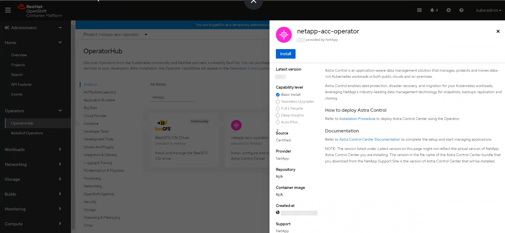

릴리스 정보
릴리스 정보
OpenShift OperatorHub를 사용하여 Astra Control Center를 설치합니다
 변경 제안
변경 제안
Red Hat OpenShift를 사용하는 경우 Red Hat 공인 운영자를 사용하여 Astra Control Center를 설치할 수 있습니다. 이 절차를 사용하여 에서 Astra Control Center를 설치합니다 "Red Hat 에코시스템 카탈로그" 또는 Red Hat OpenShift Container Platform 사용.
이 절차를 완료한 후에는 설치 절차로 돌아가 를 완료해야 합니다 "나머지 단계" 설치 성공 여부를 확인하고 로그온합니다.
-
* 환경 필수 조건 충족 *: "설치를 시작하기 전에 Astra Control Center 구축을 위한 환경을 준비합니다".

Astra Control Center를 세 번째 고장 도메인 또는 보조 사이트에 배포합니다. 앱 복제 및 원활한 재해 복구에 권장됩니다. -
* 건강한 클러스터 운영자 및 API 서비스 보장 *:
-
OpenShift 클러스터에서 모든 클러스터 운영자가 정상 상태인지 확인합니다.
oc get clusteroperators -
OpenShift 클러스터에서 모든 API 서비스가 정상 상태인지 확인합니다.
oc get apiservices
-
-
* 라우팅 가능한 FQDN *: 사용하려는 Astra FQDN을 클러스터로 라우팅할 수 있습니다. 즉, 내부 DNS 서버에 DNS 항목이 있거나 이미 등록된 코어 URL 경로를 사용하고 있는 것입니다.
-
* OpenShift 권한 얻기 *: Red Hat OpenShift Container Platform에 대한 모든 필수 권한과 액세스 권한이 있어야 설명된 설치 단계를 수행할 수 있습니다.
-
* 인증서 관리자 구성 *: 클러스터에 이미 인증서 관리자가 있는 경우 일부 작업을 수행해야 합니다 "필수 단계" 따라서 Astra Control Center는 자체 인증 관리자를 설치하지 않습니다. 기본적으로 Astra Control Center는 설치 중에 자체 인증서 관리자를 설치합니다.
-
* Kubernetes Ingress 컨트롤러 설정 *: 클러스터의 로드 밸런싱과 같은 서비스에 대한 외부 액세스를 관리하는 Kubernetes Ingress 컨트롤러가 있는 경우 Astra Control Center에서 사용하도록 설정해야 합니다.
-
연산자 네임스페이스 만들기:
oc create namespace netapp-acc-operator
-
"설정을 완료합니다" 수신 컨트롤러 유형에 적합합니다.
-
-
* (ONTAP SAN 드라이버만 해당) 다중 경로 사용 *: ONTAP SAN 드라이버를 사용하는 경우 모든 Kubernetes 클러스터에서 다중 경로가 활성화되어 있는지 확인하십시오.
다음 사항도 고려해야 합니다.
-
* NetApp Astra Control 이미지 레지스트리에 액세스 *:
NetApp 이미지 레지스트리에서 Astra Control Provisioner와 같은 Astra Control의 설치 이미지 및 기능 개선 사항을 가져올 수 있습니다.
-
레지스트리에 로그인해야 하는 Astra Control 계정 ID를 기록합니다.
계정 ID는 Astra Control Service 웹 UI에서 확인할 수 있습니다. 페이지 오른쪽 상단의 그림 아이콘을 선택하고 * API 액세스 * 를 선택한 후 계정 ID를 기록합니다.
-
같은 페이지에서 * API 토큰 생성 * 을 선택하고 API 토큰 문자열을 클립보드에 복사하여 편집기에 저장합니다.
-
Astra Control 레지스트리에 로그인합니다.
docker login cr.astra.netapp.io -u <account-id> -p <api-token>
-
-
* 보안 통신을 위한 서비스 메시를 설치합니다 * : Astra Control 호스트 클러스터 통신 채널은 을 사용하여 보안을 유지하는 것이 좋습니다 "지원되는 서비스 메시입니다".

Astra Control Center를 서비스 메시와 통합하는 작업은 Astra Control Center 중에만 수행할 수 있습니다 "설치" 그리고 이 과정에 독립적이지 않습니다. 메시에서 메시되지 않은 환경으로 다시 변경하는 것은 지원되지 않습니다. Istio 서비스 메시를 사용하려면 다음을 수행해야 합니다.
-
를 추가합니다
istio-injection:enabledAstra Control Center를 구축하기 전에 Astra 네임스페이스에 레이블을 지정합니다. -
를 사용합니다
Generic수신 설정 에 대한 대체 침입을 제공합니다 "외부 부하 균형". -
Red Hat OpenShift 클러스터의 경우 을 정의해야 합니다
NetworkAttachmentDefinition연결된 모든 Astra Control Center 네임스페이스에서 (netapp-acc-operator,netapp-acc,netapp-monitoring응용 프로그램 클러스터 또는 대체된 사용자 지정 네임스페이스의 경우).cat <<EOF | oc -n netapp-acc-operator create -f - apiVersion: "k8s.cni.cncf.io/v1" kind: NetworkAttachmentDefinition metadata: name: istio-cni EOF cat <<EOF | oc -n netapp-acc create -f - apiVersion: "k8s.cni.cncf.io/v1" kind: NetworkAttachmentDefinition metadata: name: istio-cni EOF cat <<EOF | oc -n netapp-monitoring create -f - apiVersion: "k8s.cni.cncf.io/v1" kind: NetworkAttachmentDefinition metadata: name: istio-cni EOF
-
|
|
Astra Control Center 운영자를 삭제하지 마십시오(예: kubectl delete -f astra_control_center_operator_deploy.yaml) 포드가 삭제되지 않도록 Astra Control Center 설치 또는 작동 중에 언제든지.
|
Astra Control Center를 다운로드하고 압축을 풉니다
다음 위치 중 하나에서 Astra Control Center 이미지를 다운로드하십시오.
-
* Astra 컨트롤 서비스 이미지 레지스트리 *: Astra 컨트롤 센터 이미지에 로컬 레지스트리를 사용하지 않거나 NetApp Support 사이트에서 번들 다운로드보다 이 방법을 선호하는 경우 이 옵션을 사용합니다.
-
* NetApp Support 사이트 *: Astra 컨트롤 센터 이미지와 함께 로컬 레지스트리를 사용하는 경우 이 옵션을 사용합니다.
-
Astra Control Service에 로그인합니다.
-
대시보드에서 * Astra Control의 자가 관리형 인스턴스 배포 * 를 선택합니다.
-
지침에 따라 Astra Control 이미지 레지스트리에 로그인하고 Astra Control Center 설치 이미지를 가져온 다음 이미지를 추출합니다.
-
Astra Control Center가 포함된 번들을 다운로드합니다 (
astra-control-center-[version].tar.gz)를 선택합니다 "Astra Control Center 다운로드 페이지". -
(권장되지만 선택 사항) Astra Control Center용 인증서 및 서명 번들을 다운로드합니다 (
astra-control-center-certs-[version].tar.gz)를 클릭하여 번들 서명을 확인합니다.tar -vxzf astra-control-center-certs-[version].tar.gzopenssl dgst -sha256 -verify certs/AstraControlCenter-public.pub -signature certs/astra-control-center-[version].tar.gz.sig astra-control-center-[version].tar.gz출력이 표시됩니다
Verified OK확인 성공 후. -
Astra Control Center 번들에서 이미지를 추출합니다.
tar -vxzf astra-control-center-[version].tar.gz
로컬 레지스트리를 사용하는 경우 추가 단계를 완료합니다
Astra Control Center 번들을 로컬 레지스트리에 푸시하려는 경우 NetApp Astra kubectl 명령줄 플러그인을 사용해야 합니다.
NetApp Astra kubtl 플러그인을 설치합니다
최신 NetApp Astra kubectl 명령줄 플러그인을 설치하려면 다음 단계를 완료하십시오.
NetApp은 다양한 CPU 아키텍처 및 운영 체제에 대한 플러그인 바이너리를 제공합니다. 이 작업을 수행하기 전에 사용 중인 CPU 및 운영 체제를 알아야 합니다.
이전 설치에서 이미 플러그인을 설치한 경우 "최신 버전이 있는지 확인하십시오" 다음 단계를 수행하기 전에
-
사용 가능한 NetApp Astra kubectl 플러그인 바이너리를 나열하고 운영 체제 및 CPU 아키텍처에 필요한 파일 이름을 적어 주십시오.

kubbeck 플러그인 라이브러리는 tar 번들의 일부이며 폴더에 압축이 풀립니다 kubectl-astra.ls kubectl-astra/ -
올바른 바이너리를 현재 경로로 이동하고 이름을 로 변경합니다
kubectl-astra:cp kubectl-astra/<binary-name> /usr/local/bin/kubectl-astra
레지스트리에 이미지를 추가합니다
-
Astra Control Center 번들을 로컬 레지스트리로 푸시하려는 경우 컨테이너 엔진에 적합한 단계 시퀀스를 완료합니다.
Docker 를 참조하십시오-
타볼의 루트 디렉토리로 변경합니다. 가 표시됩니다
acc.manifest.bundle.yaml파일 및 다음 디렉토리:acc/
kubectl-astra/
acc.manifest.bundle.yaml -
Astra Control Center 이미지 디렉토리의 패키지 이미지를 로컬 레지스트리에 밀어 넣습니다. 를 실행하기 전에 다음 대체 작업을 수행합니다
push-images명령:-
<BUNDLE_FILE>를 Astra Control 번들 파일의 이름으로 바꿉니다 (
acc.manifest.bundle.yaml)를 클릭합니다. -
<MY_FULL_REGISTRY_PATH>를 Docker 저장소의 URL로 바꿉니다. 예를 들어, "https://<docker-registry>".
-
<MY_REGISTRY_USER>를 사용자 이름으로 바꿉니다.
-
<MY_REGISTRY_TOKEN>를 레지스트리에 대한 인증된 토큰으로 바꿉니다.
kubectl astra packages push-images -m <BUNDLE_FILE> -r <MY_FULL_REGISTRY_PATH> -u <MY_REGISTRY_USER> -p <MY_REGISTRY_TOKEN>
-
팟맨-
타볼의 루트 디렉토리로 변경합니다. 이 파일과 디렉토리가 표시됩니다.
acc/
kubectl-astra/
acc.manifest.bundle.yaml -
레지스트리에 로그인합니다.
podman login <YOUR_REGISTRY> -
사용하는 Podman 버전에 맞게 사용자 지정된 다음 스크립트 중 하나를 준비하고 실행합니다. <MY_FULL_REGISTRY_PATH>를 모든 하위 디렉토리가 포함된 리포지토리의 URL로 대체합니다.
Podman 4export REGISTRY=<MY_FULL_REGISTRY_PATH> export PACKAGENAME=acc export PACKAGEVERSION=24.02.0-69 export DIRECTORYNAME=acc for astraImageFile in $(ls ${DIRECTORYNAME}/images/*.tar) ; do astraImage=$(podman load --input ${astraImageFile} | sed 's/Loaded image: //') astraImageNoPath=$(echo ${astraImage} | sed 's:.*/::') podman tag ${astraImageNoPath} ${REGISTRY}/netapp/astra/${PACKAGENAME}/${PACKAGEVERSION}/${astraImageNoPath} podman push ${REGISTRY}/netapp/astra/${PACKAGENAME}/${PACKAGEVERSION}/${astraImageNoPath} donePodman 3export REGISTRY=<MY_FULL_REGISTRY_PATH> export PACKAGENAME=acc export PACKAGEVERSION=24.02.0-69 export DIRECTORYNAME=acc for astraImageFile in $(ls ${DIRECTORYNAME}/images/*.tar) ; do astraImage=$(podman load --input ${astraImageFile} | sed 's/Loaded image: //') astraImageNoPath=$(echo ${astraImage} | sed 's:.*/::') podman tag ${astraImageNoPath} ${REGISTRY}/netapp/astra/${PACKAGENAME}/${PACKAGEVERSION}/${astraImageNoPath} podman push ${REGISTRY}/netapp/astra/${PACKAGENAME}/${PACKAGEVERSION}/${astraImageNoPath} done
레지스트리 구성에 따라 스크립트가 만드는 이미지 경로는 다음과 같아야 합니다. https://downloads.example.io/docker-astra-control-prod/netapp/astra/acc/24.02.0-69/image:version
-
-
디렉토리를 변경합니다.
cd manifests
운영자 설치 페이지를 찾으십시오
-
운영자 설치 페이지에 액세스하려면 다음 절차 중 하나를 완료하십시오.
Red Hat OpenShift 웹 콘솔-
OpenShift Container Platform UI에 로그인합니다.
-
측면 메뉴에서 * Operators > OperatorHub * 를 선택합니다.
이 연산자를 사용하여 현재 버전의 Astra Control Center에만 업그레이드할 수 있습니다. -
을(를) 검색합니다
netapp-accNetApp Astra Control Center 운영자를 선택합니다.
Red Hat 에코시스템 카탈로그-
NetApp Astra Control Center를 선택합니다 "운영자".
-
배포 및 사용 * 을 선택합니다.

-
운전자를 설치합니다
-
Install Operator * 페이지를 완료하고 운영자를 설치합니다.
운영자는 모든 클러스터 네임스페이스에서 사용할 수 있습니다. -
운영자 설치의 일부로 운영자 네임스페이스 또는 'NetApp-acc-operator' 네임스페이스가 자동으로 생성됩니다.
-
수동 또는 자동 승인 전략을 선택합니다.
수동 승인이 권장됩니다. 클러스터당 하나의 운영자 인스턴스만 실행 중이어야 합니다. -
설치 * 를 선택합니다.
수동 승인 전략을 선택한 경우 이 작업자에 대한 수동 설치 계획을 승인하라는 메시지가 표시됩니다.
-
-
콘솔에서 OperatorHub 메뉴로 이동하여 운영자가 성공적으로 설치되었는지 확인합니다.
Astra Control Center를 설치합니다
-
Astra Control Center 운영자의 * Astra Control Center * 탭에 있는 콘솔에서 * Create AstraControlCenter * 를 선택합니다.

-
'Create AstraControlCenter' 양식 필드를 작성합니다.
-
Astra Control Center 이름을 유지하거나 조정합니다.
-
Astra Control Center에 대한 레이블을 추가합니다.
-
자동 지원을 활성화 또는 비활성화합니다. 자동 지원 기능을 유지하는 것이 좋습니다.
-
Astra Control Center FQDN 또는 IP 주소를 입력합니다. 들어가지마
http://또는https://를 입력합니다. -
Astra Control Center 버전(예: 24.02.0-69)을 입력합니다.
-
계정 이름, 이메일 주소 및 관리자 성을 입력합니다.
-
의 볼륨 재확보 정책을 선택합니다
Retain,Recycle, 또는Delete. 기본값은 입니다Retain. -
설치의 배율 크기를 선택합니다.
기본적으로 Astra는 HA(High Availability)를 사용합니다. scaleSize의Medium`즉, HA에서 대부분의 서비스를 구축하고 이중화를 위해 여러 복제본을 배포합니다. 와 함께 `scaleSize현재 `Small`Astra는 소비를 줄이기 위한 필수 서비스를 제외한 모든 서비스의 복제본 수를 줄일 것입니다. -
-
* 일반 * (
ingressType: "Generic") (기본값)다른 수신 컨트롤러를 사용 중이거나 자체 수신 컨트롤러를 사용하려는 경우 이 옵션을 사용하십시오. Astra Control Center를 구축한 후 를 구성해야 합니다 "수신 컨트롤러" URL을 사용하여 Astra Control Center를 표시합니다.
-
* AccTraefik * (
ingressType: "AccTraefik")수신 컨트롤러를 구성하지 않으려는 경우 이 옵션을 사용하십시오. 그러면 Astra Control Center가 구축됩니다
traefikKubernetes "로드 밸런서" 유형 서비스로서의 게이트웨이
Astra Control Center는 "loadbalancer" 유형의 서비스를 사용합니다. (
svc/traefikAstra Control Center 네임스페이스에서), 액세스 가능한 외부 IP 주소를 할당해야 합니다. 로드 밸런서가 사용자 환경에서 허용되고 아직 로드 밸런서가 구성되어 있지 않은 경우 MetalLB 또는 다른 외부 서비스 로드 밸런서를 사용하여 외부 IP 주소를 서비스에 할당할 수 있습니다. 내부 DNS 서버 구성에서 Astra Control Center에 대해 선택한 DNS 이름을 부하 분산 IP 주소로 지정해야 합니다. -
"로드 밸런서" 및 수신 서비스 유형에 대한 자세한 내용은 을 참조하십시오 "요구 사항". -
Image Registry*에서 로컬 레지스트리를 구성하지 않은 경우 기본값을 사용합니다. 로컬 레지스트리의 경우 이 값을 이전 단계에서 이미지를 푸시한 로컬 이미지 레지스트리 경로로 바꿉니다. 들어가지마
http://또는https://를 입력합니다. -
인증이 필요한 이미지 레지스트리를 사용하는 경우 이미지 암호를 입력합니다.
인증이 필요한 레지스트리를 사용하는 경우 클러스터에 암호를 생성합니다. -
관리자의 이름을 입력합니다.
-
리소스 확장을 구성합니다.
-
기본 스토리지 클래스를 제공합니다.
기본 스토리지 클래스가 구성된 경우 기본 주석이 있는 유일한 스토리지 클래스인지 확인합니다. -
CRD 처리 기본 설정을 정의합니다.
-
-
YAML 보기를 선택하여 선택한 설정을 검토합니다.
-
Create를 선택합니다.
레지스트리 암호를 만듭니다
인증이 필요한 레지스트리를 사용하는 경우 OpenShift 클러스터에 암호를 생성하고 에 암호 이름을 입력합니다 Create AstraControlCenter 양식 필드.
-
Astra Control Center 운영자용 네임스페이스를 생성합니다.
oc create ns [netapp-acc-operator or custom namespace]
-
이 네임스페이스에 암호 만들기:
oc create secret docker-registry astra-registry-cred -n [netapp-acc-operator or custom namespace] --docker-server=[your_registry_path] --docker username=[username] --docker-password=[token]
Astra Control은 Docker 레지스트리 비밀만 지원합니다. -
의 나머지 필드를 작성합니다 Create AstraControlCenter 양식 필드.